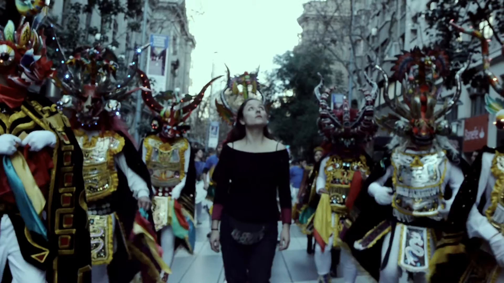
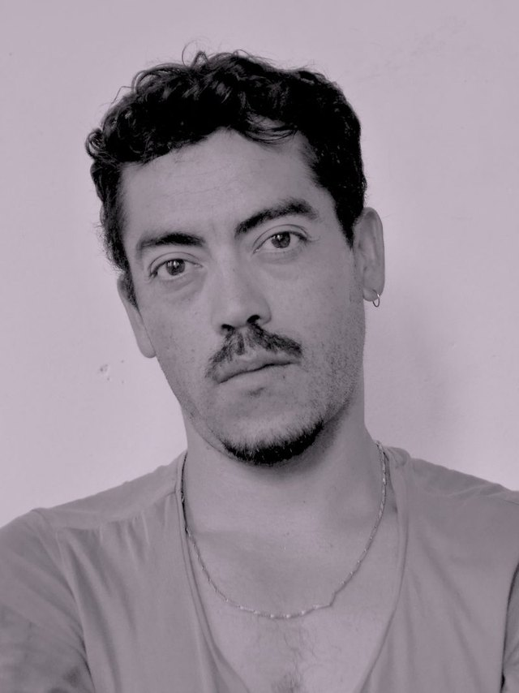
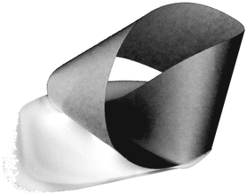

Trailer
TrailerThe Heart Is Not a Bomb
 Official SelectionCine Bio-BíoChileOfficial SelectionSantiago a MilChileJetzt ansehen
Official SelectionCine Bio-BíoChileOfficial SelectionSantiago a MilChileJetzt ansehenEcdysis: Actions for Shedding Skin. Liquefy
 Jetzt ansehen
Jetzt ansehenTo Dwell
 Jetzt ansehen
Jetzt ansehenAhora Somos Nosotres
 Jetzt ansehen
Jetzt ansehenExplorers of La Redonda
 Official SelectionArtes MedialesChileJetzt ansehen
Official SelectionArtes MedialesChileJetzt ansehenEscape
 Best FilmImagitari DJK FestIndonesia · 2018Official SelectionIowa ScreenDanceUnited StatesOfficial SelectionFestival ABCSpainOfficial SelectionDança em FocoBrazilOfficial SelectionCine ItuzaingóArgentinaOfficial SelectionFIDIC CocoaArgentinaOfficial SelectionIntermediacionesColombiaOfficial SelectionSão Carlos VideodanceBrazilOfficial SelectionLa mida no importaSpainOfficial SelectionMiTSSpainOfficial SelectionSardinian FestivalItalyOfficial SelectionCCPCCosta RicaOfficial SelectionBekraf FestIndonesiaOfficial SelectionFICESMIArgentinaJetzt ansehen
Best FilmImagitari DJK FestIndonesia · 2018Official SelectionIowa ScreenDanceUnited StatesOfficial SelectionFestival ABCSpainOfficial SelectionDança em FocoBrazilOfficial SelectionCine ItuzaingóArgentinaOfficial SelectionFIDIC CocoaArgentinaOfficial SelectionIntermediacionesColombiaOfficial SelectionSão Carlos VideodanceBrazilOfficial SelectionLa mida no importaSpainOfficial SelectionMiTSSpainOfficial SelectionSardinian FestivalItalyOfficial SelectionCCPCCosta RicaOfficial SelectionBekraf FestIndonesiaOfficial SelectionFICESMIArgentinaJetzt ansehenmisoginia Pandora

Official SelectionDanzalbordeChile · 2016Official SelectionInVeChile · 2016Official SelectionAthens Video Dance ProjectGriechenland · 2016Official SelectionEl CruceArgentina · 2016Official SelectionLUMENChile · 2016Teasermisoginia EVA


über dEUSeXmACHINAfilms
Mehr ↗dEUSeXmACHINAfilms macht Tanzfilme, experimentelle und hybride Dokumentarfilme sowie Musikvideos.
Gegründet 2018, tätig zwischen Chile und Österreich – mit Sitz in Klagenfurt am Wörthersee, Kärnten.
Die Filme wurden in achtzehn Ländern gezeigt: Chile, Argentinien, Peru, Bolivien, Brasilien, Kolumbien, Costa Rica, Mexiko, USA, Kanada, Spanien, Portugal, Italien, Griechenland, Ukraine, Rumänien, Indonesien und Australien.
misoginia Pandora gewann den Preis für den besten Film beim DJK Fest Imagitari, Indonesien. Al aire el río, für die Band SUBE, gewann das Animal and Environmental Film Festival, Mexiko. ESCAPE, produziert mit Heidi Duckler Dance, erhielt eine lobende Erwähnung beim Mexico City Videodance Festival, und Morar eine Auszeichnung für Choreografie bei der VIII Muestra Movimiento Audiovisual.

Felipe Díaz Galarce — Regisseur
Vor dem Film zwölf Jahre Theater als Schauspieler, Autor und Regisseur sowie Produzent der Theaterkompanie Turba (2009–2019). Er tanzt zeitgenössischen Tanz und Contact Improvisation mit der Kompanie mundomoebio, mit der er in Argentinien, Peru, Chile, Brasilien, Kanada und China aufgetreten ist.
Vollständige Biografie und eigene Arbeiten auf felipediazgalarce.com
Sarah Stachova — Management & Kommunikation
Partnerin von dEUSeXmACHINAfilms. Sie verantwortet Management, Kommunikation und Administration und ist Ansprechpartnerin für deutschsprachige Kundinnen und Kunden.
kontakt
Für weitere Informationen schreiben Sie uns direkt.
info@deusexmachinafilms.artpartner & kooperationen
